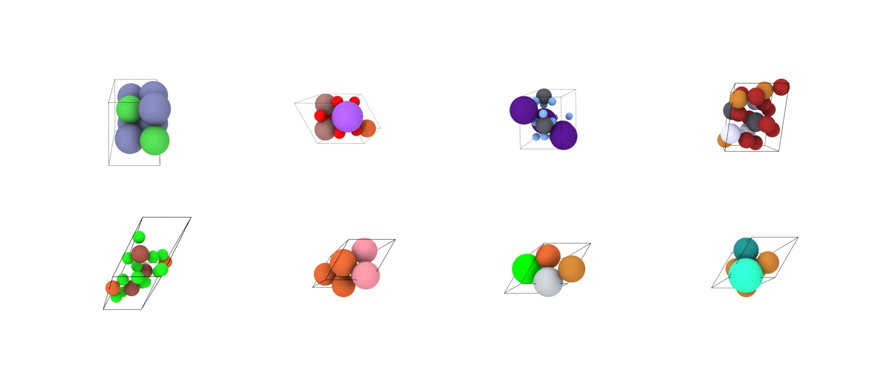
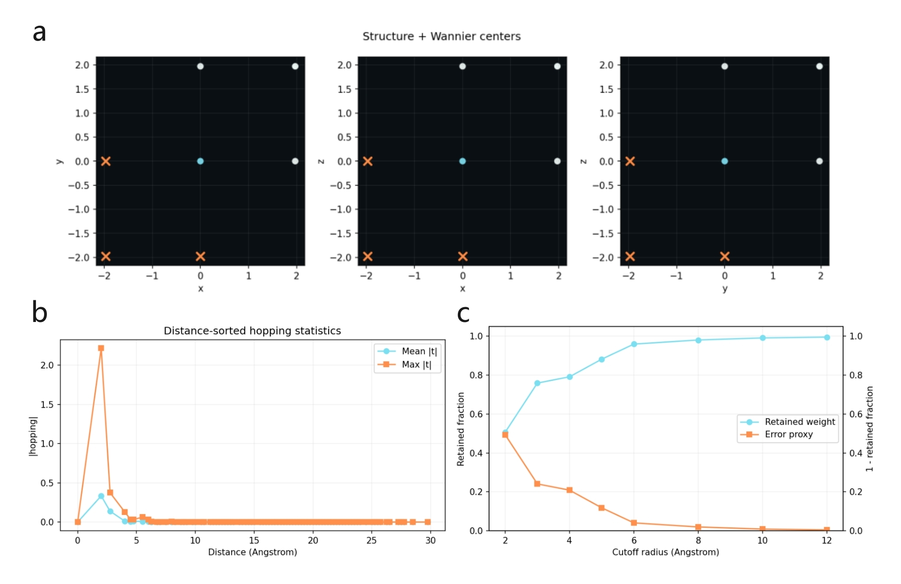
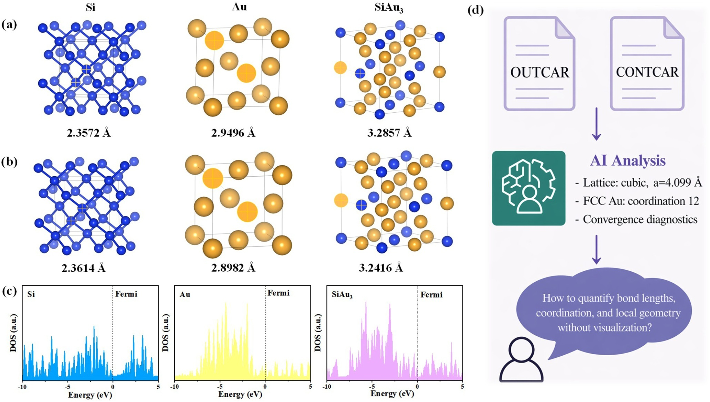

Design with intent.
Explore candidate structures through unconditional or property-conditioned crystal generation.
An interface for materials discovery
Bring generative design, first-principles simulation, and AI-assisted interpretation into one connected research workspace.
Good science asks connected questions. Your tools should work that way, too.
MatterMind brings together tools that usually live in separate scripts, terminals, and analysis notebooks. Generate candidate crystals, orchestrate simulations, inspect the evidence, and ask the next question.
The published study introduces the platform and its materials case studies. The supplied extended manuscript and current repository explore a broader set of scientific workflows.
Discover the researchExplore candidate structures through unconditional or property-conditioned crystal generation.
Move from input files to calculation logs, structured metrics, plots, and downloadable results.
Use language models to help interpret results, with expert judgment at the center.
Three connected stages, from a promising idea to a result you can investigate. Explore the platform’s workflow concepts below.
Launch crystal generation and inspect the structures it produces. Set a chemical system or a supported property target, then review candidate metrics and export artifacts for the next step.

Organize calculation inputs, launch supported scientific workflows, and follow the logs. The current code includes VASP orchestration and modules for transition pathways, Wannier analysis, and post-processing.

Bring structured calculation metrics into a language-model-assisted analysis. Read the summaries alongside the underlying outputs, then use follow-up chat to examine your results in more detail.
Structures · logs · spectraMetrics · plots · artifactsExplain. Compare. Ask again.
This is a project showcase. Interactive controls explain the workflows; they do not launch scientific calculations.
Explore the studies behind MatterMind. Published results and expanded workflows are identified separately so you can trace every claim to its source.
Published article · §3.1 · Figure 2
The journal study follows Si, Au, and SiAu₃ through relaxation and electronic-structure analysis, connecting computational outputs with LLM-assisted interpretation.
Reported before → after relaxation in the journal article. These are individual study examples, not performance benchmarks. See the paper and Fig. 2.
Inspect the published evidence
Extended manuscript · Generation examples
The extended manuscript presents a batch of 16 unconditional candidates, with eight illustrated in Figure 4. A separate conditioned example demonstrates why processing success and target satisfaction must be checked independently.
16/16 processed. 0/16 strict symmetry matches.
The requested space group was No. 225; the candidates were unrelaxed. A completed generation job does not by itself establish that a scientific target was met. Inspect the QC example, p. 16 ↗
Reported examples from the supplied extended manuscript; not independently rerun for this release. The figure shows the unconditional run, not the conditioned quality-control example.
Explore the generation studyExtended manuscript · Figure 8
A SrTiO₃ example explores a 14-orbital Wannier model, illustrating how simulation outputs can be carried into electronic-structure analysis within the expanded workflow.
This case belongs to the supplied extended manuscript. It is a reported workflow example, not an independently reproduced result or a benchmark of predictive accuracy.
Inspect the Wannier exampleMatterMind: An LLM-Assisted Platform for Crystal Generation, Materials Simulation, and AI-Guided Analysis expands the discussion to React/FastAPI/Celery/Redis, HDF5 processing, NEB, Wannier90, and postw90 workflows. It is a distinct supplied version by Yujun Lu, Kaiyang Xu, and Lei Zhang. The repository and journal architecture are documented separately in the reproducibility notes.
Read the extended manuscriptThe publication
Materials Genome Engineering Advances
Volume 4 · Issue 2 · e70075 · 2026
Read the work. Inspect the code. Build on the ideas.
Everything starts with a clear source.
The web workspace, orchestration code, and scientific workflow modules.
02 / StartEnvironment setup, external engines, configuration, and launch instructions.
03 / VerifyCode and manuscript boundaries, research artifacts, and reproducibility notes.
Build on this work
@article{Xu2026MatterMind,
title = {{MatterMind}: A User-Friendly Material Design Platform
Assisted by Large Language Model},
author = {Xu, Kaiyang and Lu, Yujun and Liu, Lifeng and Zhang, Lei},
journal = {Materials Genome Engineering Advances},
year = {2026},
volume = {4},
number = {2},
pages = {e70075},
doi = {10.1002/mgea.70075},
url = {https://doi.org/10.1002/mgea.70075}
}